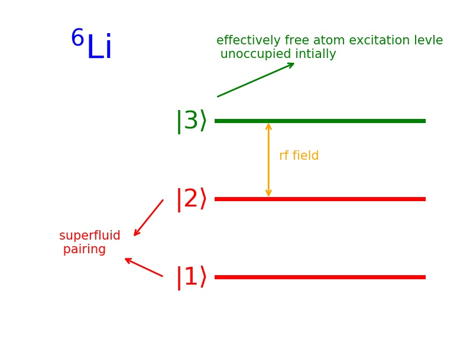
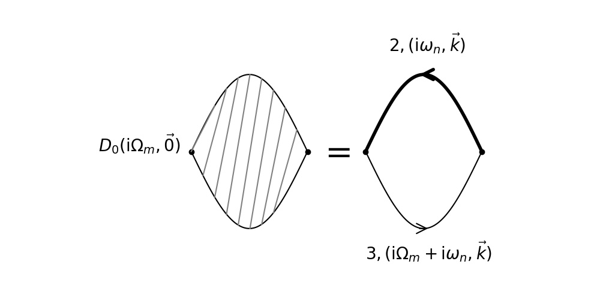

RF Current 推导
Table of Contents
1. System
考虑 Li-6 最低的三个 hyperfine states. 最低的两个态 \(|1\rangle\) , \(|2\rangle\) 参与超 流配对. 态 \(|3\rangle\) 是一个有效的自由的激发能级(effectively a free atom excitation level) .
一开始 \(|3\rangle\) 态是空的.
RF field, 会 drive 原子从 \(|2\rangle\) 态向 \(|3\rangle\) 态跃迁. 如图  picture code
2. Hamiltonian
考虑巨正则系统, 态 \(|3\rangle\) 的 Hamiltonian 为
\begin{align} H_3 - \mu_3N_3 = \sum_{\vec{k}}(\epsilon_{\vec{k}} - \mu_3) c_{3,\vec{k}}^{\dagger} c_{3,\vec{k}} \end{align}态 \(|1\rangle\) , \(|2\rangle\) 类似, 化学势 \(\mu_1=\mu_2=\mu\)
由 RF field 产生的的 \(|2\rangle\) , \(|3\rangle\) 之间的跃迁为
\begin{align} H_T = \sum_{\vec{k},\vec{p}}T_{\vec{k},\vec{p}} c_{3,\vec{p}}^{\dagger} c_{2,\vec{k}} + \mathrm{h.c.} \end{align}3. RF Current
RF current 定义为
\begin{align} I = -\langle \dot{N}_2\rangle = -\mathrm{i} \langle [H, N_2] \rangle \end{align}由线性响应理论得
\begin{align} I(\nu) = - \frac{1}{\pi}\mathrm{Im}D^R(\nu + \mu -\mu_3) = - \frac{1}{\pi}\mathrm{Im}D^R(\Omega_L) \end{align}其中 \(\Omega_L\) 是 rf field 的频率. \(\nu = \Omega_L - (\epsilon_3-\epsilon_2)= \Omega_L - (\mu-\mu_3)\) 为 detuning. 考虑线性响应理论的最低阶近似, \(D\) 可以分解为(如图)
\begin{align} D_0(\mathrm{i}\Omega_{m}, \vec{0}) = \frac{1}{\beta} \sum_{\vec{k}}\sum_{\omega_n} G^{(2)}(\mathrm{i}\omega_n, \vec{k}) G^{(3)}(\mathrm{i}\omega_n + \mathrm{i}\Omega_m, \vec{k}) \end{align} picture code
用下面的式子, 把格林函数用谱函数表示
\begin{align} G^M(\vec{k}, E_n) = \frac{1}{2\pi}\int \mathrm{d}E' \frac{A(\vec{k}, E')} {\mathrm{i}E_n - E'} \end{align}得到
\begin{align} D_0(\mathrm{i}\Omega_{m}, \vec{0}) = \frac{1}{\beta}\frac{1}{4\pi^2}\sum_{\vec{k}} \int \mathrm{d}E_1 \int \mathrm{d}E_2 \sum_{\omega_n} A^{(2)}(E_1, \vec{k}) A^{(3)}(E_2, \vec{k}) \frac{1}{\mathrm{i}\omega_n-E_1} \frac{1}{\mathrm{i}\omega_n + \mathrm{i}\Omega_m-E_2} \end{align}频率求和后
\begin{align} D_0(\mathrm{i}\Omega_{m}, \vec{0}) = \frac{1}{4\pi^2}\sum_{\vec{k}} \int \mathrm{d}E_1 \int \mathrm{d}E_2 A^{(2)}(E_1, \vec{k}) A^{(3)}(E_2, \vec{k}) \left[ f(E_1) - f(E_2) \right] \frac{1}{\mathrm{i}\Omega_m-E_2 + E_1} \end{align}做代换 \(\mathrm{i}\Omega_m \to \Omega_{L} + \mathrm{i}0^+\) , 并取虚部得到 \(I_0(\nu)\)
\begin{align} I_0(\nu) =& -\frac{1}{\pi}(-\pi)\frac{1}{4\pi^2} \sum_{\vec{k}} \int \mathrm{d}E_1 \int \mathrm{d}E_2\cdot A^{(2)}(E_1, \vec{k}) A^{(3)}(E_2, \vec{k}) \cdot\left[ f(E_1) - f(E_2) \right] \cdot\delta (\Omega_L - E_2 + E_1) \\ =&\frac{1}{4\pi^2} \sum_{\vec{k}} \int \mathrm{d}E_1 A^{(2)}(E_1, \vec{k}) A^{(3)}(\Omega_L + E_1, \vec{k}) \cdot\left[ f(E_1) - f(\Omega_L + E_1) \right] \\ =& \frac{1}{4\pi^2} \sum_{\vec{k}} \int \mathrm{d}\epsilon \cdot A^{(2)}(\epsilon, \vec{k}) A^{(3)}(\bar{\epsilon}, \vec{k}) \cdot\left[ f(\epsilon) - f(\bar{\epsilon}) \right] \\ \end{align}其中 \(\bar{\epsilon} = \Omega_L+\epsilon=\epsilon+\nu+\mu-\mu_3\) .
4. 态 \(|3\rangle\) 上的粒子自由时
态 \(|3\rangle\) 是自由粒子, 所以它的谱函数为 \(A^{(3)}(\bar{\epsilon}, \vec{k}) = 2\pi\delta [\bar{\epsilon} - (\epsilon_{\vec{k}} - \mu_3)] = 2\pi\delta (\epsilon + \nu + \mu - \epsilon_{\vec{k}}) = 2\pi\delta(\epsilon-\xi_{\vec{k}} + \nu)\) , 代入上式可得
\begin{align} I_0(\nu) = \frac{1}{2\pi}\sum_{\vec{k}} A^{(2)}(\xi_{\vec{k}} - \nu, \vec{k}) \cdot\left[ f(\xi_{\vec{k}} - \nu) - f(\xi_{\vec{k},3}) \right] \end{align}其中 \(\epsilon_{\vec{k}} = \frac{\hbar^2k^2}{2m}, \xi_{\vec{k}} = \epsilon_{\vec{k}} - \mu, \xi_{\vec{k},3} = \epsilon_{\vec{k}} - \mu_3\)
5. 态 \(|2\rangle\) 上的粒子也自由时
在 \(|2\rangle\) 态也是自由的时候, \(A^{(2)}(\xi_{\vec{k}}- \nu, \vec{k})=A_0^{(2)}(\xi_{\vec{k}}-\nu, \vec{k})= 2\pi \delta(\xi_{\vec{k}}-\nu-\xi_{\vec{k}}) = 2\pi \delta(\nu)\) , 代回上式
\begin{align} I_0(\nu) = \sum_{\vec{k}} \delta(\nu) \cdot\left[ f(\xi_{\vec{k}} - \nu) - f(\xi_{\vec{k},3}) \right] \end{align}是一个 \(\delta\) 峰. 它满足 sum rule
\begin{align} \int \mathrm{d}\nu \cdot I_0(\nu) =& \sum_{\vec{k}} \left[f(\xi_{\vec{k}}) - 0\right] \\ =& \sum_{\vec{k}} f(\xi_{\vec{k}}) \\ =& N \end{align}其中利用了 \(|3\rangle\) 空态, 所以 \(f(\xi_{\vec{k},3}) = 0\) .
6. 总结
常用思想, 除了级数展开, 小量分析外, 将新得到的结果代回的已知结论, 看能否回到原 来的简单情况, 是否符合实际的物理, 以验证新结论是否可靠, 也是很重要的思想.
7. Supplymentary
费米子的频率求和
\begin{align} \sum_{\omega_n = \frac{(2n+1)\pi}{\beta}} \frac{1}{\mathrm{i}\omega_n - \xi_{\vec{k}}} = \beta n_{\mathrm{F}}(\xi_{\vec{k}}) \end{align}8. Reference
- Qijin Chen et al 2009 Rep. Prog. Phys. 72 122501